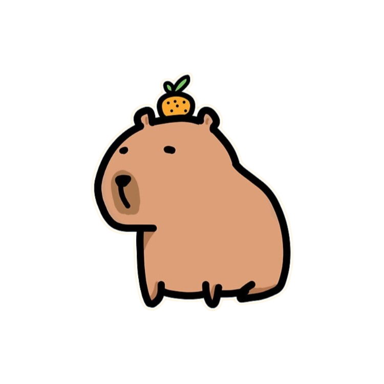

ㅤMấy ngày qua anh cũng đã suy nghĩ rất nhiều rồi.
Về chuyện của mình, đúng là một phần do mình yêu cũng lâu thì cũng sẽ đến giai đoạn cảm thấy
chán, dần dần thấy được nhiều những cái xấu của nhau hơn nên em bực vì những điều nhỏ nhặt cũng
chả có gì là lạ. Nhưng anh thấy là anh cũng có một phần lỗi trong việc này. Anh thấy bản thân mình
còn trẻ con và thiếu tinh tế. Anh hay làm những việc mà anh nghĩ trong đầu là sẽ làm cho mối quan hệ
của mình tốt hơn, anh cứ cố làm mà không để ý tới cảm xúc của em lúc đó như thế nào thế nên những
việc đấy nó không có kết quả tốt mà còn vô tình tạo cho em một cảm giác khó chịu. Lâu ngày nó cứ tích
dần tích dần làm cho cái cảm giác đấy nó ngày càng lớn hơn. Anh nhận ra là không phải ngày nào anh cũng
kè kè nhắn tin hay chúc ngủ ngon mỗi tối thì là tốt, nếu em đang không vui hay bận thì nó còn phiền là đằng khác.
Thay vào đấy anh nên để cho em có khoảng thời gian riêng tư hơn, biết để ý quan tâm hơn tới tâm trạng của em, biết
em đang cảm thấy như thế nào thì nó sẽ tốt hơn những cái đấy nhiều. Anh xin lỗi vì đã để em phải chịu cảm giác khó
chịu suốt thời gian qua, anh biết là cái khó chịu ấy không thể ngày một ngày hai mà mất được nhưng anh sẽ cố gắng
trưởng thành hơn để em không bao giờ phải chịu cảm giác đấy nữa. Anh hơi lơ ngơ, chậm hiểu, lắm lúc em còn bảo anh
là ngốc nghếch, nhưng Tèo của em hứa được thì sẽ làm được. Em chưa muốn nói chuyện thì cũng chưa cần trả lời anh luôn
đâu nhưng mà trên đây là tất cả suy nghĩ của anh. Biết là khó nhưng anh mong mình có thể vượt qua và cùng nhau hoàn thiện
bản thân mình hơn so với hiện tại.
